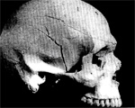
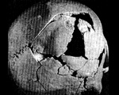
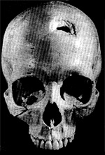
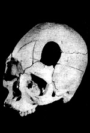
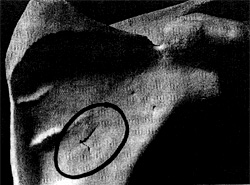
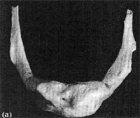

Any weapon used as a club can cause blunt force trauma (such as bat, hammer, boot, rock, or brick). Such trauma can also result from falling or being pushed onto a hard surface. Blunt force trauma typically occurs during car, train, or plane.
Blunt trauma to right of skull

Massive blunt trauma to
back of skull

2. Projectile Trauma - an injury caused by a blow from a heavy moving sharp object. The types of projectiles causing this type of trauma include bullets, arrows, and spears. The injury usually appears to begin small but becomes wider as the projectile passes through the bone. These types of wounds cause the complete displacement of bone with radiating fracture lines from the point of impact. The type of force produced by this type of trauma is usually a compression force, but some weapons can cause a bending force.


3. Sharp Force Trauma - an injury caused by a compression or shearing force applied towards a narrow focus. When the force is perpendicular, puncture wounds appear in the bone. If the force is applied at an angle, grazing cut marks are evident in the bone. Complete fractures of bone can occur when the weapon used is a chopping type of instrument (such as an axe). Incomplete bone infraction occurs when the weapon used is a cutting type of instrument (such as a knife).
Sharp Force Trauma to the Scapula, caused by a Knife

4. Death by Strangulation - a cause of death suspected when the hyoid (or hyoid bone) is damaged. The hyoid bone covers the voice box (larynx) in the neck. The hyoid bone is a free-floating C-shaped structure of three fused bones. In 8.0% of deaths caused by suicidal hanging, the hyoid bone appears fractured; in 34% of strangulation deaths, fractured hyoids have been observed. Thus, if a forensic anthropologist observes a fractured hyoid bone and no direct evidence suggests that death was by suicide (such as a noose around neck), the inference is made that the evidence is consistent with a death caused by strangulation.
For a forensic anthropologist to conclude from the remains of a young child that strangulation has occurred is difficult because the three bones of the hyoid have fused in only 7.0% of humans under the age of 20. (See photographs below.)
Adult Hyoid Bone

Immature Hyoid Bone